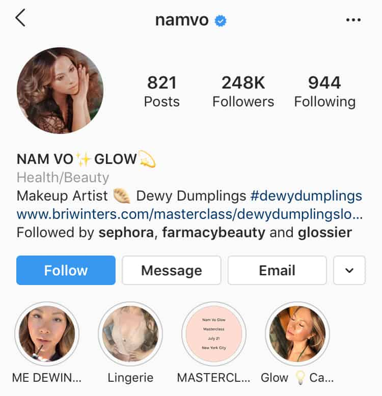
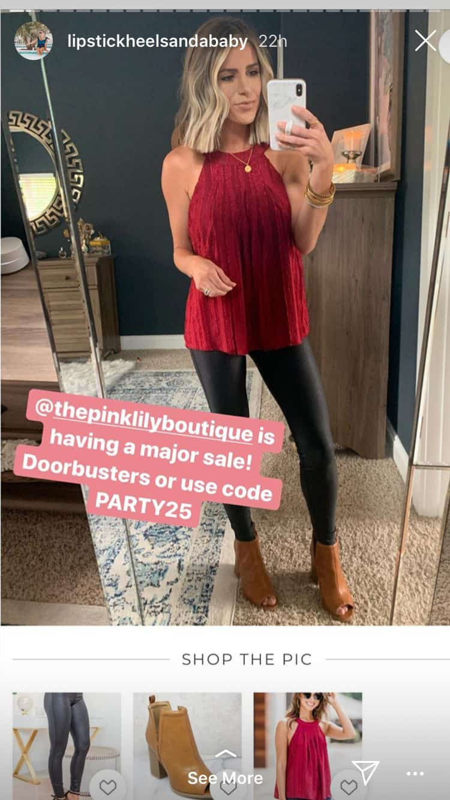
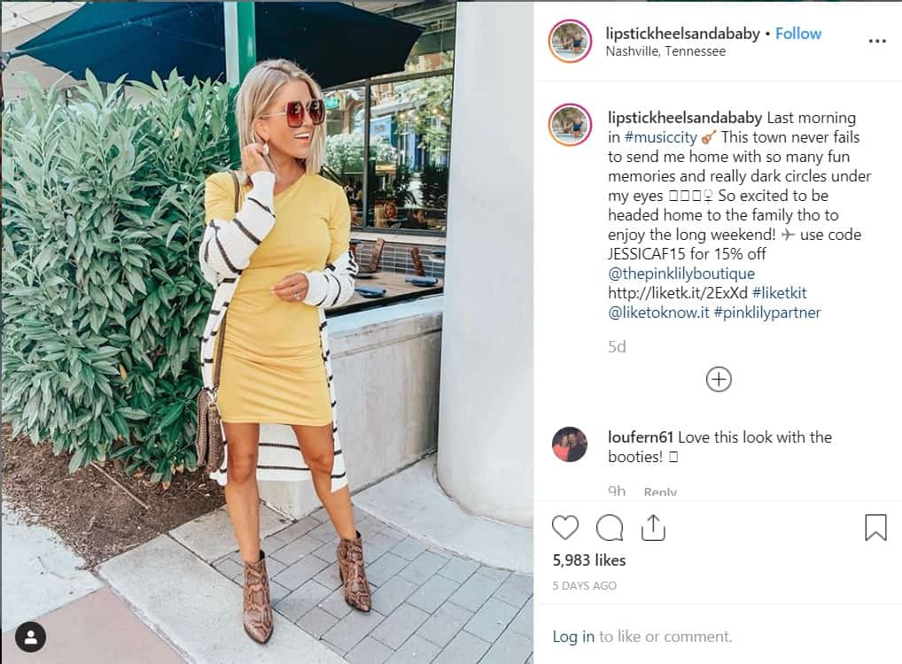
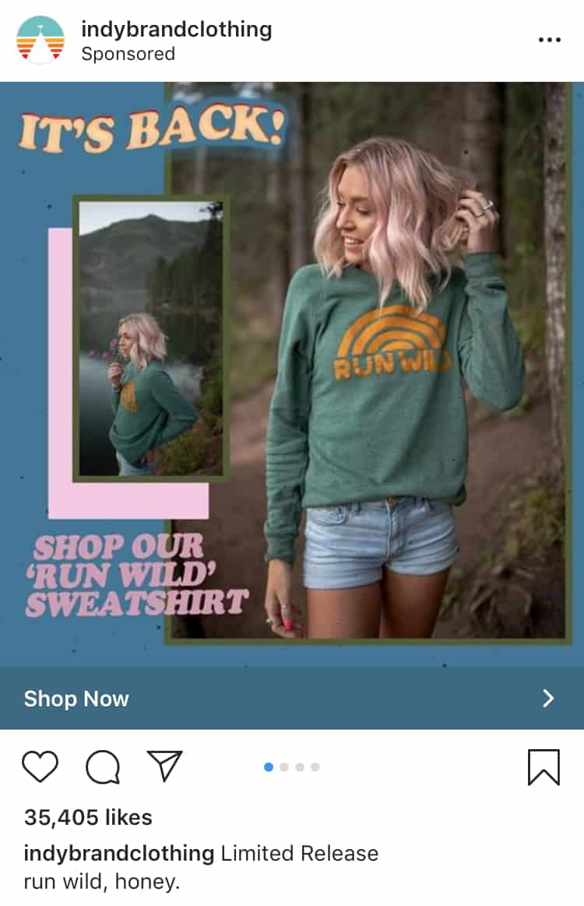
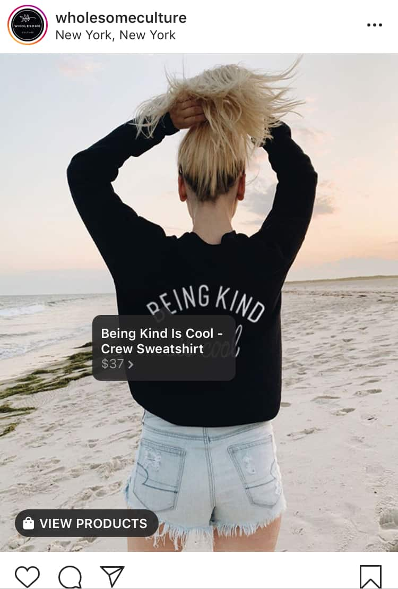
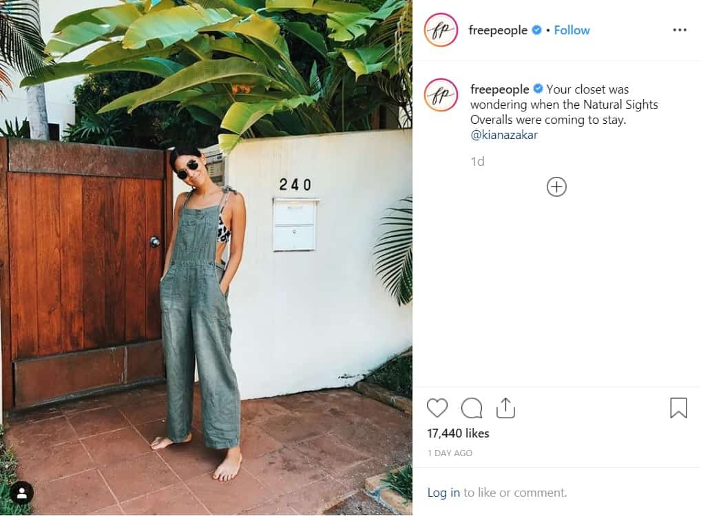
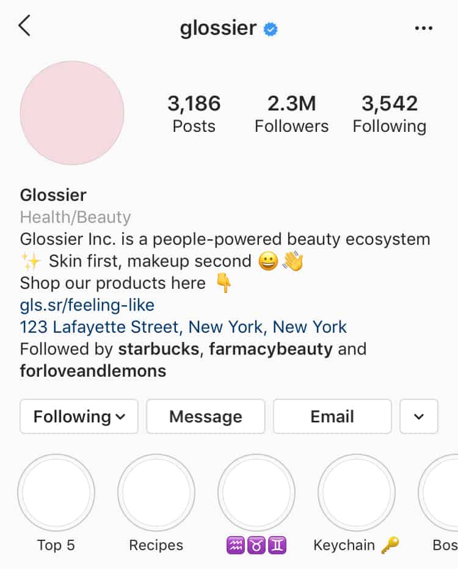
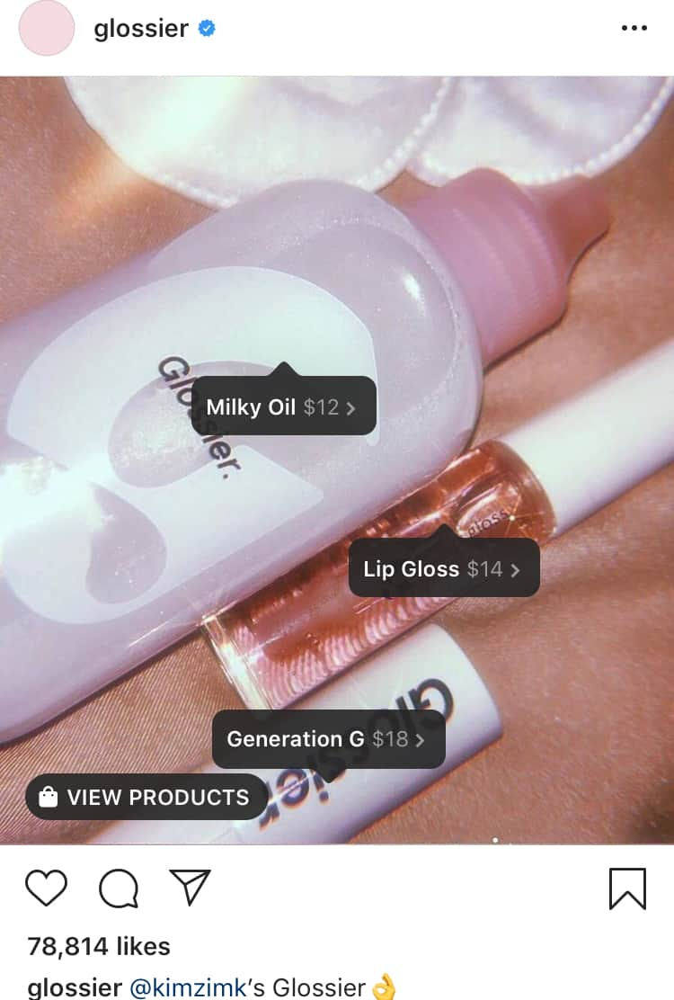
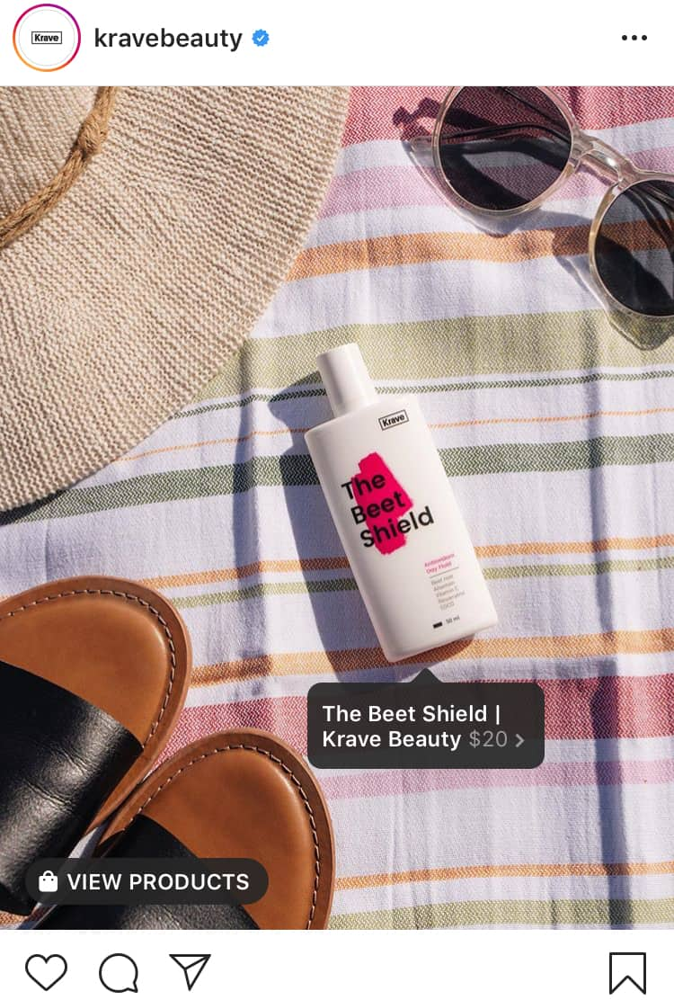
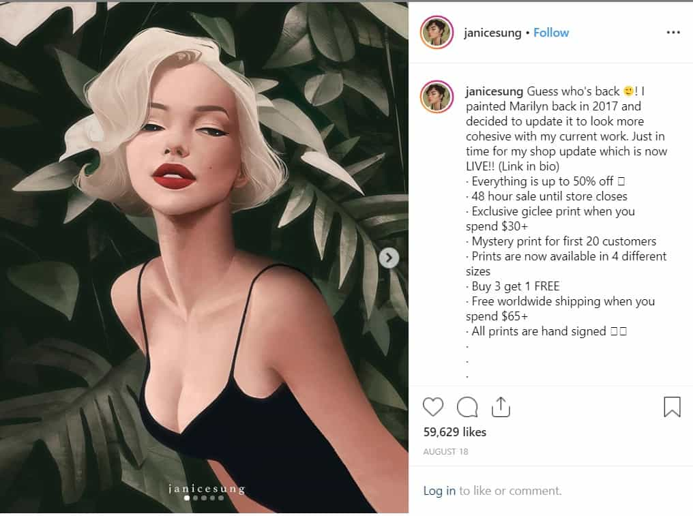

Want to make money out of your carefully curated Instagram account? Then learn how to monetize Instagram!
Instagram has grown from a casual social media platform to a marketing channel. This growth opened a lot of opportunities for its users.
You’re most likely aware of influencers, social media users, who are making money on the platform. They are cashing in on their pictures, videos, and Stories.
Those who successfully profited off their account have two things: reach and influence. These factors allow them to explore potential revenue streams.
Here are a few ways on how to monetize Instagram:
- Focusing on sponsored posts
- Becoming an affiliate
- Using shoppable posts
- Selling photography, art, and more
But first, you need to grow your account.
In this post, we’ll give you tips to boost your following. Most importantly, we have a comprehensive guide on how to monetize Instagram.
How To Grow Your Account
You already have an account, now what?
If you want to learn how to monetize Instagram, you first need to grow your account. Here’s a basic checklist:
Complete Your Bio
Make use of this space to add details regarding your personal brand. Give your audience reasons to follow you.
Tip: Add CTAs in your bio. In doing so, you’ll increase the chances of your audience tapping the follow button.
Post High-Quality Content
It’s not always about how frequent you post. Remember, quality is better than quantity. Make sure that your content provides value to your audience.
Tip: Stick to a theme for a more cohesive look. Another option is to tell a story through your feed.
Boost Engagement Rate
Remember, a large number of followers isn’t everything. You need to have an engaged audience.
As we’ve mentioned earlier, successful influencers have reach and influence. Brands and businesses are more likely to collaborate with you if you have an engaged following.
A 2-3% engagement rate is considered average. Aim for a higher rate. With that said, although top influencers make thousands per Instagram post, those with a small but engaged following can learn how to monetize Instagram as well.

But how do you boost engagement? Here are a few quick tips:
- Use branded hashtags. This makes it easier for your audience to find your content. Additionally, it also helps boost brand awareness.
- Host giveaways. When hosting giveaways, you can ask participants to tag a friend, like the post, or follow your account.
- Interact with your followers. This is crucial in establishing a connection. For instance, if they have a question, try your best to respond. Additionally, you should also like or leave comments on their posts.
Let’s say you already have a curated feed and you’ve built an engaged Instagram following.
Now it’s time to learn how to monetize Instagram!
How To Monetize Instagram Tip #1: Be An Influencer
With the growth of social media, “Influencer” has become a household term.
In a nutshell, an influencer has built a credible online reputation. They can sway their audience’s view on specific trends and products. Why? Because their audience trusts and values their opinion.

These influencers are considered as trendsetters and trusted experts on specific subjects and industry.
However, not everyone can become an influencer.
If you want to learn how to monetize Instagram as an influencer, you need to step up your game.
It takes a lot of time and effort. Here’s a glimpse of what influencers do behind their beautifully curated feed:
- Run their Instagram full-time.
- Constantly create high quality, valuable content based on their niche.
- Talk with partners and plan their feed
- Engage with their audience
I’m ready for the challenge! So how to monetize Instagram as an influencer?
Shoutouts
Believe it or not, some accounts – even brands, pay you if you mention them in your account.
For instance, someone sends you an Instagram DM asking for a shoutout. Another option is to reach out to an account or brand yourself.
How much should you charge per shoutout?
It usually depends on the niche. The most common rate is around $100 per shoutout, especially if you have real and engaged followers of more than 50k.
Sponsored Posts
A sponsored post looks like your regular content. However, you are showcasing a brand’s product or service. Usually, these posts include a branded hashtag.
Of course, you’ll receive a fee for every sponsored content. According to a survey of 5,000 influencers, 42% charged between $200 and $400 per post.
Why is this a great strategy on how to monetize Instagram?
Today, audiences are more likely to trust an unbiased third party over a traditional advertisement.

For this reason, businesses are allocating a bigger budget for Instagram marketing. They need influencers to widen their reach.
How to get started?
Post High Quality and Stylish Content
Establishing a good Instagram presence is a must. This is pretty obvious; however, it bears repeating.
Think of your Instagram account as your portfolio. Brands will look at your feed to determine whether you’re the right fit. Here are a few things brands take into account:
- What does your content look like?
- Do you post original content?
- Is your style and personality in line with the brand’s identity?
- What is your follower number and engagement rate?
Reach Out To Brands
Brands usually tap established influencers. However, don’t be discouraged! You can also look for brands to work with.
For one, you can contact them directly and try coming up with a good deal. Another option is to check out influencer marketplaces. For instance, you can list yourself on Influence.co or TRIBE.
These platforms help you find the right brand to collaborate with.
How To Monetize Instagram Tip #2: Sell Affiliate Products
Becoming an affiliate means you’re more focused on making sales for your partner business. You’re not only boosting brand awareness. Your aim is increasing sales!

Why should you care about sales?
In affiliate marketing, you will earn a commission for:
- Each visitor brought by your affiliate link
- Every sale made using your unique promo code
How does this work?
When you become an affiliate, you’ll be given a unique, trackable link. The affiliate program will then use it to track how many users clicked your link and purchased from the site. This is how to monetize Instagram.
Remember, you can’t post links outside your bio or Stories. Therefore, if you’re using affiliate links, you can only focus on one product at a time.

Tip: Using promo codes is a good strategy on how to monetize Instagram. You can easily incorporate it into your regular content.
How To Monetize Instagram Tip #3: Grow Your Existing Business
According to studies, 75% of Instagram users make purchase decisions after seeing an Instagram ad. For this reason, establishing an Instagram presence is highly beneficial.

Need more reasons to be on Instagram?
- Instagram has a highly engaged audience. In fact, 65% of Instagram users engage with their favorite brands regularly. This leads to a wider reach as compared to other social media platform.
- Ads aren’t as invasive. Your audience is less likely to scroll past your ads without doing anything.
- Better customer interaction. After posting content, you can expect your audience to leave a comment or inquire. This opens discussion, leading to a real-time connection.
Most importantly, Instagram now has shoppable posts, taking online shopping to the next level.
Adding shopping tags to your content is another strategy on how to monetize Instagram. With this feature, the user can simply tap your photo. Then they’ll see item details, like price and description.

This feature makes the shopping experience on the platform more seamless and fluid. It’s definitely a game-changer for making money on Instagram.
To use it, you’ll need an Instagram business account. Plus, you’ll need a Facebook page and a Facebook shop.
To take this strategy further, use Instagram to promote your products. Here are a few tips:
- Post behind the scenes content. This type of content is popular among users. It establishes authenticity and transparency which helps boost customer loyalty.
- Take advantage of user-generated content. Encourage customers to share their images of your products. Then feature select posts in your account. It boosts brand awareness as well as increase engagement.

How To Monetize Instagram Tip #4: Create Online Courses
Provide value to your audience by creating online courses or downloadable guides in your specific niche. Why is this an effective strategy?
- You’ll be able to engage with your followers
- It helps build a deeper connection
- Monetize your Instagram account
How do you get started?
First of all, determine your intentions and goals.
- Why do you need to create these online courses
- Does your audience need these courses?
- What are your skills or expertise that you can teach to somebody?
- Is your audience willing to learn?
- Will they pay willingly for these courses?
As a tip, listen to the frequently asked questions of your audience.
Take @funskincare as an example. Claudia Christin is a Seoul-based dermatology postgrad student who shares simple skincare tips and tricks.
She creates short how-to content based on frequently asked questions.

Another great example is @minimalistbaker. When you look at her account, you’ll find food recipes. However, she also created courses on food photography.

Why? Because her audience kept asking how she took beautiful photos. They asked, she delivered!
How to monetize Instagram via online courses?
- Host a contest or challenge. This creates hype around your online course. Plus, winners can also provide reviews which help boost awareness.
- Pre-sell your course. This entails selling your online course at a discounted price. It’s a great strategy. For one, you’ll start earning before your course is created. Secondly, you’ll gauge whether your audience is willing to pay for your course.
How To Monetize Instagram Tip #5: Create Your Own Brand
This strategy is quite different from growing your existing brand. This strategy involves launching a brand new business on Instagram.
Instagram is an awesome platform to showcase your products. When done right, it’ll drive traffic to your site.
Take for example the beauty brand, Glossier. It was launched in 2014 by Emily Weiss. She’s a former staff at Vogue and is behind the lifestyle blog, Into the Gloss.
When she gained a sizeable following, she created a line of beauty and skincare products. Then she launched Glossier on Instagram.
Needless to say, it was a huge success. They attracted 13,000 followers even before their products were launched on their online site.
What they did right:
- Prioritized Instagram as the core of their marketing strategy. Their customers are on Instagram. Therefore, use the platform to create your online persona and connect with your audience.
- Posted over 125 Instagram photos before launching. In doing so, they were able to establish brand identity and generate buzz.
With the addition of shopping tags, it’s so much easier for their audience to shop their feed.

Today, more and more Instagram influencers are following Glossier’s footsteps. Some of them are selling their own merchandise to monetize Instagram.
Another example is from Krave Beauty. Liah Yoo, the founder and CEO of this beauty company, found the need for sustainable and reliable skincare products.

From there, she created products based on follower suggestions and feedback. Like Glossier, she used Instagram to promote her products.
How To Monetize Instagram Tip #6: Sell Your Photos Or Artwork
This is one of the unconventional strategies on how to monetize Instagram. You don’t need an online or brick-and-mortar store for this to work.
Here are a few things you can do:
- Grow your account by posting photos and art.
- Interact with your audience
- Don’t shortchange yourself by lowering the rate of your art pieces

Your audience can support your work by buying from you.
- Consider starting a print-on-demand service.
- Sell your photos or art pieces as prints.
- Advertise your photography services. Direct your audience to your email or link to your website.
In Conclusion
Instagram is the fastest growing social media platform. It has opened a plethora of possibilities for e-commerce.
How to monetize Instagram depends on the strategies you pick. Therefore, choose techniques that are true to your brand identity. Learn from successful Instagram influencers and entrepreneurs.
So go out there and start building your empire.


1 Comment